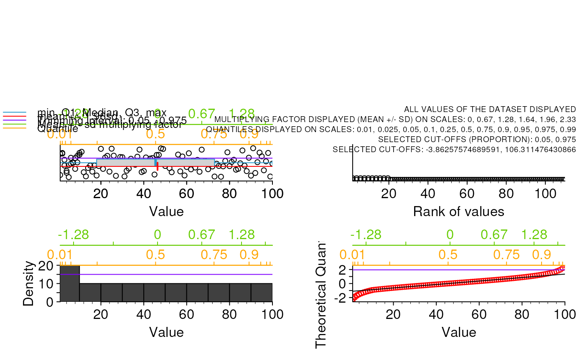

trim
trim.RdTrim and display values from a numeric vector or matrix.
Plot 4 graphs: stripchart of values, stripchart of rank of values, histogram and normal QQPlot.
Different kinds of intervals are displayed on the top of graphes to facilitate the analysis of the variable and a trimming setting.
The trimming interval chosen is displayed on top of graphs.
Both trimmed and not trimmed values are returned in a list.
Usage
trim(
data,
displayed.nb = NULL,
single.value.display = FALSE,
trim.method = "",
trim.cutoffs = base::c(0.05, 0.975),
interval.scale.disp = TRUE,
down.space = 0.75,
left.space = 0.75,
up.space = 0.3,
right.space = 0.25,
orient = 1,
dist.legend = 0.37,
box.type = "l",
amplif.label = 1.25,
amplif.axis = 1.25,
std.x.range = TRUE,
std.y.range = TRUE,
cex.pt = 0.2,
col.box = grDevices::hsv(0.55, 0.8, 0.8),
x.nb.inter.tick = 4,
y.nb.inter.tick = 0,
tick.length = 1,
sec.tick.length = 0.75,
corner.text = "",
amplif.legend = 1,
corner.text.size = 0.75,
trim.return = FALSE,
safer_check = TRUE
)Arguments
- data
Values to plot (either a numeric vector or a numeric matrix).
- displayed.nb
Single numeric value indicating the number of values displayed. If NULL, all the values are displayed. Otherwise, if the number of values is over displayed.nb, then displayed.nb values are displayed after random selection.
- single.value.display
Single logical value. Provide the 4 graphs if data is made of a single (potentially repeated value)? If FALSE, an empty graph is displayed if data is made of a single (potentially repeated value). And the return list is made of NULL compartments.
- trim.method
Write "" if not required. write "mean.sd" if mean +/- sd has to be displayed as a trimming interval (only recommanded for normal distribution). Write "quantile" to display a trimming interval based on quantile cut-offs. No other possibility allowed. See trim.cutoffs below.
- trim.cutoffs
2 values cutoff for the trimming interval displayed, each value between 0 and 1. Not used if trim.method == "".The couple of values c(lower, upper) represents the lower and upper boundaries of the trimming interval (in proportion), which represent the interval of distribution kept (between 0 and 1). Example: trim.cutoffs = c(0.05, 0.975). What is strictly kept for the display is ]lower , upper[, boundaries excluded. Using the "mean.sd" method, 0.025 and 0.975 represent 95% CI which is mean +/- 1.96 * sd.
- interval.scale.disp
Single logical value. Display sd and quantiles intervals on top of graphs ?
- down.space
Single positive numeric value indicating the lower vertical margin (in inches, mai argument of par()).
- left.space
Single positive numeric value indicating the left horizontal margin (in inches, mai argument of par()).
- up.space
Single positive numeric value indicating the upper vertical margin between plot region and grapical window (in inches, mai argument of par()).
- right.space
Single positive numeric value indicating the right horizontal margin (in inches, mai argument of par()).
- orient
Single positive numeric value indicating the scale number orientation (las argument of par()). 0, always parallel to the axis; 1, always horizontal; 2, always perpendicular to the axis; 3, always vertical.
- dist.legend
Single positive numeric value that moves axis legends away in inches (first number of mgp argument of par() but in inches thus / 0.2).
- box.type
The bty argument of par(). Either "o", "l", "7", "c", "u", "]", the resulting box resembles the corresponding upper case letter. A value of "n" suppresses the box.
- amplif.label
Single positive numeric value to increase or decrease the size of the text in legends.
- amplif.axis
Single positive numeric value to increase or decrease the size of the scale numbers in axis.
- std.x.range
Single logical value. Standard range on the x-axis? TRUE (no range extend) or FALSE (4% range extend). Controls xaxs argument of par() (TRUE is xaxs = "i", FALSE is xaxs = "r").
- std.y.range
Single logical value. Standard range on the y-axis? TRUE (no range extend) or FALSE (4% range extend). Controls yaxs argument of par() (TRUE is yaxs = "i", FALSE is yaxs = "r").
- cex.pt
Single positive numeric value indicating the size of points in stripcharts (in inches, thus cex.pt will be thereafter / 0.2).
- col.box
Single character string indicating the color of boxplot.
- x.nb.inter.tick
Single positive integer value indicating the number of secondary ticks between main ticks on x-axis (only if not log scale). Zero means non secondary ticks.
- y.nb.inter.tick
Single positive integer value indicating the number of secondary ticks between main ticks on y-axis (only if not log scale). Zero means non secondary ticks.
- tick.length
Single proportion value indicating the length of the ticks (1 means complete the distance between the plot region and the axis numbers, 0.5 means half the length, etc. 0 means no tick.
- sec.tick.length
Single proportion value indicating the length of the secondary ticks (1 means complete the distance between the plot region and the axis numbers, 0.5 means half the length, etc., 0 for no ticks).
- corner.text
Single character string. Text to add at the top right corner of the window.
- amplif.legend
Single positive numeric value to increase or decrease the size of the text of legend.
- corner.text.size
Single positive numeric value to increase or decrease the size of the text. Value 1 does not change it, 0.5 decreases by half, 2 increases by 2.
- trim.return
Single logical value. Return the trimmed and non trimmed values? NULL returned for trimmed and non trimmed values if trim.method == "".
- safer_check
Single logical value. Perform some "safer" checks (see https://github.com/safer-r)? If TRUE, checkings are performed before main code running: 1) R classical operators (like "<-") not overwritten by another package because of the R scope and 2) required functions and related packages effectively present in local R lybraries. Set to FALSE if this fonction is used inside another "safer" function to avoid pointless multiple checkings.
Value
A list containing:
- $trim.method: correspond to the trim.method argument.
- $trim.cutoffs: correspond to the trim.cutoffs argument.
- $real.trim.cutoffs: the two boundary values in the unit of the numeric vector or numeric matrix analyzed.
- $trimmed.values: the values outside of the trimming interval as defined in the trim.cutoffs argument.
- $kept.values: the values inside the trimming interval as defined in the trim.cutoffs argument.
Author
Gael Millot <gael.millot@pasteur.fr>
Yushi Han <yushi.han2000@gmail.com>
Haiding Wang <wanghaiding442@gmail.com>
Examples
trim(data = c(1:100, 1:10), displayed.nb = NULL, single.value.display = FALSE, trim.method = "mean.sd", trim.cutoffs = c(0.05, 0.975), interval.scale.disp = TRUE, down.space = 0.75, left.space = 0.75, up.space = 0.3, right.space = 0.25, orient = 1, dist.legend = 0.37, box.type = "l", amplif.label = 1.25, amplif.axis = 1.25, std.x.range = TRUE, std.y.range = TRUE, cex.pt = 0.2, col.box = grDevices::hsv(0.55, 0.8, 0.8), x.nb.inter.tick = 4, y.nb.inter.tick = 0, tick.length = 0.5, sec.tick.length = 0.3, corner.text = "", amplif.legend = 1, corner.text.size = 0.75, trim.return = TRUE)
#> Warning: argument 1 does not name a graphical parameter
#> Warning: argument 1 does not name a graphical parameter
#> Warning: argument 1 does not name a graphical parameter

#> $trim.method
#> [1] "mean.sd"
#>
#> $trim.cutoffs
#> [1] 0.050 0.975
#>
#> $real.trim.cutoffs
#> [1] -3.862576 106.311476
#>
#> $trimmed.values
#> integer(0)
#>
#> $kept.values
#> [1] 1 1 2 2 3 3 4 4 5 5 6 6 7 7 8 8 9 9
#> [19] 10 10 11 12 13 14 15 16 17 18 19 20 21 22 23 24 25 26
#> [37] 27 28 29 30 31 32 33 34 35 36 37 38 39 40 41 42 43 44
#> [55] 45 46 47 48 49 50 51 52 53 54 55 56 57 58 59 60 61 62
#> [73] 63 64 65 66 67 68 69 70 71 72 73 74 75 76 77 78 79 80
#> [91] 81 82 83 84 85 86 87 88 89 90 91 92 93 94 95 96 97 98
#> [109] 99 100
#>